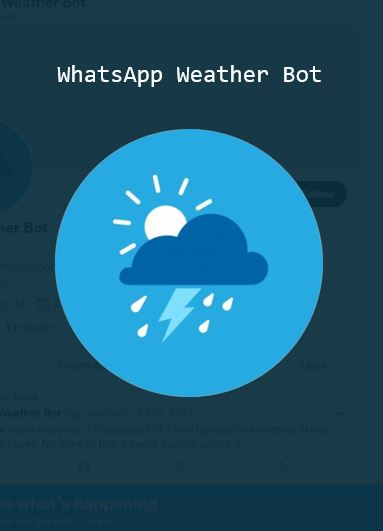

Weather forecasts made with love
The WhatsApp Weather Bot was the first bot I made while working in SMRT. I made it because I noticed that my directors sometimes reminded the staff to drive and work safely where there is inclement weather approaching. To increase the consistency, accuracy and thoroughness of these reminders, I felt that a bot would do much better job (and I was also sure that building this was going to be extremely fun).
Interestingly, at the point when I was working on this project, I could not find any existing examples of a WhatsApp bot (actually I still do not see any WhatsApp bots 2 years later, Telegram bots were and are aplenty though) and this was also one of my first forays into Python, so I got to work out the entire design of the bot from scratch. The base idea is extremely hacky and I gave myself a time limit of 3 days worth of free time:
while True:
page = requests.get("https://api.data.gov.sg/v1/environment/2-hour-weather-forecast")
soup=BeautifulSoup(page.content,"html.parser")
goodsoup = soup.prettify()
#Clean up soup
for char in string.punctuation:
goodsoup = goodsoup.replace(char, '')
bestsoup = goodsoup.split('Ang Mo Kio')
forecast = "Ang Mo Kio" + bestsoup[2]
listforecast = forecast.split("area")
listforecast[len(listforecast)-1] = listforecast[len(listforecast)-1].split("api").pop(0)
for i in range(len(listforecast)):
listforecast[i] = listforecast[i].split("forecast")#Message Customization
recipient = "Team LMZ"
WeatherIntroMessages = [recipient + ', do take note that the following regions may experience rain in the next 2 hours: ', recipient + ', expect rain in the following regions in the next 2 hours: ']
WeatherOutroMessages = [' Please drive safely, your safety is our priority.',' Rainy weather makes the roads more dangerous, think of your family, drive safely. ',' Drive carefully, all it takes is one accident.',' Drive slowly and carefully, life is valuable. ',' Your life is precious, drive slowly and carefully.']
WhatsApp_Message = (WeatherIntroMessages[random.randint(0,len(WeatherIntroMessages)-1)] + str(listofrainzones) + WeatherOutroMessages[random.randint(0,len(WeatherOutroMessages)-1)])#Find WhatsApp Group (Assumes group is either selected or not selected, there is a difference because the accent of the image changes)
try:
(image_x, image_y) = pyautogui.locateCenterOnScreen('group_name.png') # returns (left, top, width, height) of first place it is found
print("WHATSAPP GROUP FOUND")
except ImageNotFoundException:
(image_x, image_y) = pyautogui.locateCenterOnScreen('group_name_CLICKED.png')
print("WHATSAPP GROUP FOUND")
#Click on WhatsApp Group
pyautogui.click(x=image_x, y=image_y, clicks=1, button='left') #Check time before sending message
if (datetime.datetime.now().strftime('%H%M')) > '0730' and (datetime.datetime.now().strftime('%H%M')) < '2230' and (listofrainzones) != []:
print(WhatsApp_Message)
pyautogui.typewrite(WhatsApp_Message +'\n', interval=0.001)
time.sleep(1000)From a perspective of scalability, this method allows the user to repeat the process through a list of users, sending modified messages based on the group/user name. The core content remains the same in each message, so the element of randomness when selecting the wrapper for the content is really just a consideration for user experience - hopefully they pay more attention to the messages when it looks different each time. The speed at which the messages are sent is mainly limited by (i) delay after querying the NEA database with their API, (ii) the response time of the computer when finding the image that represents a group, (iii) navigating WhatsApp web. Typically it can take about 10 seconds for the messages to be sent out once anomalous weather is detected by the satellites - which is reasonable for the application.
An interesting problem with this method is that the locateCenterOnScreen function does not handle a change in screen resolution well (i.e. an image can have a different resolution when shifted from a primary monitor to a secondary one). On a similar note, if the user or group image changes, the images used for group location need to be updated as well - note that a similar problem occurs if the group name is used for identification. Different applications, iterations and functions of the overall program can be found on my GitHub.
Overall, the solution achieves its goal and is a way to workaround WhatsApp's anti-bot policy. Note that WhatsApp Business does support chatbots. If your application is more business-like you should consider trying that out.
Do not use this to spam :)